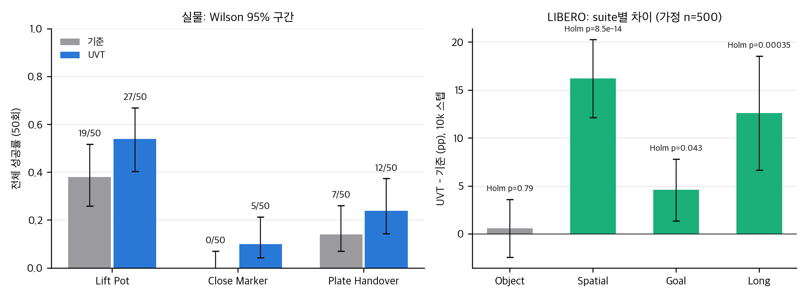
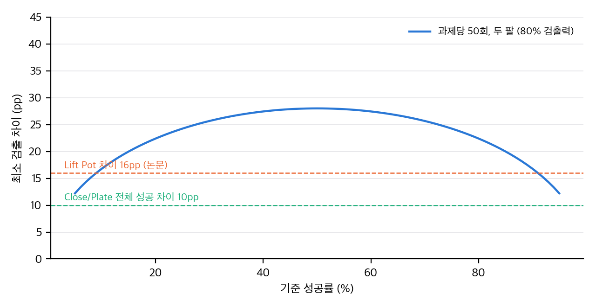
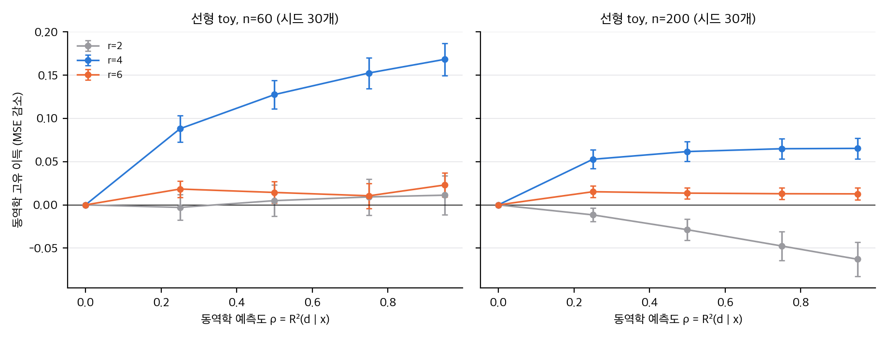

01 §3).03 §1).03 §1.3).03 §2).03 §6).04 D1–D3, D19).04 §3).04 §4).
직접 계산: 실물 과제의 전체 성공률과 Wilson 95% 구간(왼쪽), LIBERO suite별 10k 차이와 Holm 보정 p값(오른쪽, 가정 n = 500). 이득 구간은 이항 샘플링만 반영합니다.
제목: Unified Visuomotor Targets: Supervising VLAs Beyond Physical Actions
저자: Zhenyang Feng, Unnat Jain (University of California, Irvine)
arXiv: 2608.03563v1 (cs.RO), 2026-08-04 제출. 본문 9쪽. 이 분석은 v1만 봅니다.
학회: IROS 2026 채택 (arXiv 주석 "Accepted at IROS 2026")
프로젝트 페이지: https://unified-visuomotor-targets.github.io/ (코드 링크는 DeFisch/UVT)
원문: paper/paper.pdf(5.5 MB, 25 MB 미만이라 gitignore하지 않음), 텍스트 paper/paper.txt
licenses/by-nc-sa/4.0/을 가리킵니다. CC BY가 아닙니다. 비상업과 동일조건변경 조건이 붙습니다.report/figures/paper_table3.png로 잘라 개인용에 넣음). 공개 게시본과 공개 리포트에는 논문 그림과 표 이미지를 넣지 않습니다. 공개물은 논문 수치를 인용하고 직접 만든 그래프만 씁니다.04 D23). 코드는 복사하지 않습니다.VLA가 행동 청크를 직접 회귀하는 대신, 사전학습된 잠재 행동 모델(LAM)의 동역학 코드와 행동 청크를 멀티모달 VAE로 합친 32차원 잠재 목표(UVT)를 예측하게 하고, 디코더로 행동을 복원하는 학습 목표 변경입니다. 구조와 데이터는 바꾸지 않습니다.
| 구성 | 내용 | 식과 위치 |
|---|---|---|
| 입력 | 행동 청크 a_t ∈ R^{k×d}(k 스텝, d 차원), LAM 코드 z_t = LAM(v_t, v_{t+k}) | §III-A |
| 인코더 | 행동 f_a, 동역학 f_z가 각각 가우시안 평균과 로그분산을 냄 | §III-C |
| 융합 | 정밀도 가중 PoE. τ = α_a τ_a + α_z τ_z, μ = (α_a τ_a μ_a + α_z τ_z μ_z)/τ. α는 학습되는 스칼라 | §III-C |
| 목표 | u_t = μ_t ∈ R^32 | §III-C |
| 디코더 | g_a(u) → 행동, g_z(u) → 코드 | §III-C |
| MVAE 손실 | L_ACT(L1) + L_DYN(CE) + L_KL, 논문에서 가중치 1 | §III-C |
| VLA 손실 | L = ‖û − u‖²₂ + γ‖â − a‖₁, γ = 0.5. 디코더 g_a는 학습 중에도 갱신 | §III-D, §IV-A-d |
| 추론 | 정책이 û를 예측 → g_a로 행동 복원 | §III-D |
구조 변경 없음, 추가 데이터 없음(초록, §III-D). 기반 모델은 두 개입니다: VLA-Adapter(회귀 헤드)와 π0.5(플로우 매칭 헤드). 헤드의 출력만 u로 바꿉니다.
LIBERO, 10k와 100k 스텝 성공률 (Table I, II):
| 기반 | 스텝 | Object | Spatial | Goal | Long | 평균 |
|---|---|---|---|---|---|---|
| VLA-Adapter | 10k | 93.4 | 78.8 | 90.4 | 56.2 | 79.7 |
| UVT(VLA-Adapter) | 10k | 94.0 | 95.0 | 95.0 | 68.8 | 88.2 |
| VLA-Adapter | 100k | 97.6 | 96.2 | 95.6 | 89.0 | 94.6 |
| UVT(VLA-Adapter) | 100k | 99.6 | 98.6 | 97.2 | 91.2 | 96.7 |
| π0.5 | 100k | 97.8 | 98.4 | 98.0 | 90.6 | 96.2 |
| UVT(π0.5) | 100k | 99.0 | 98.4 | 97.8 | 92.4 | 96.9 |
LIBERO-Plus (Table I): 10k 평균 42.7 → 66.2, 100k 평균 70.5 → 73.6. Spatial 10k는 34.0 → 81.5입니다.
LIBERO-Spatial 헤드 비교, 10k (Table III): 기준 78.8, Villa-X 헤드 83.2, UniVLA 헤드 86.4, UVT 95.0. 100k는 96.2, 96.8, 95.8, 98.6입니다.
실물 (양팔, 과제당 시연 30회, 평가 50회, §IV-D):
정성 분석: t-SNE에서 u_t는 suite별로 묶이고 행동은 섞입니다(Fig. 5). 디코딩된 행동은 시연보다 고주파 떨림이 적습니다(Fig. 6, 정성적).
| 주장 | 증거 | 평가 |
|---|---|---|
| UVT가 학습을 빠르게 한다(10k) | Table I, LIBERO와 LIBERO-Plus | 표 산술 맞음. 시드와 시행 수 없음(03 §1) |
| 최종 성능을 해치지 않는다(100k) | Table II | 평균 +2.1pp, 개별 suite는 유의하지 않음 |
| π0.5에서도 일관된 개선 | Table II | 0.7pp, 검출 불가(03 §1.3) |
| 실물에서 잡기 신뢰도를 크게 높인다 | Fig. 2–4 본문 수치 | 과제별로 유의하지 않음, 합산 CMH만 p=0.012(03 §2) |
| 동역학 정보가 추가 가치를 낸다 | Table III(헤드 두 개 대 UVT) | 행동 전용 32차원 대조가 없음 (04 §3) |
| 목표 공간이 더 구조적이다 | Fig. 5, t-SNE | 정성적. 정량 지표 없음 |
| 디코딩 행동이 더 부드럽다 | Fig. 6 | 정성적. 정량 지표 없음 |
| 추가 데이터와 연산 없음 | §III-D, 초록 | LAM 사전학습 비용과 MVAE 비용 미보고 (03 §5) |
04 D9).04 D11).04 D1–D3).04 D13).04 D14).precision/ratio_a_over_z)에 해당하는 수치가 논문에 없습니다.02_prior_work.md §3에 정리했습니다. 요지는 다음과 같습니다. 잠재 행동을 로봇 학습에 쓰는 축(motion_latent_action, dreamx), VLA 헤드와 목표를 바꾸는 축(imle_vla, adavla, pacevla), 보조 예측을 붙이는 축(thinkworld, openwam, restacvla)과 맞닿습니다.
계산 파일: analysis/table_check.py → table_check_results.json(표 산술, LIBERO와 실물 검정, CMH, Holm, 검출력), analysis/uvt_toy.py → uvt_toy_results.json(선형 toy), analysis/plot_figures.py(그래프). 모두 CPU, 단일 스레드, 수 초에서 수십 초입니다.
가정 (명시): 논문은 LIBERO의 suite별 시행 횟수와 시드 수를 쓰지 않았습니다. 그래서 두 가지를 가정합니다. (a) 공식 코드의 기본값인 과제당 50회 × 과제 10개 = suite당 500회. (b) README 예시의 과제당 20회 = suite당 200회(민감도). 표준오차는 이항 샘플링만 반영하고 시드 분산은 빠져 있으므로, 여기서의 p값은 하한에 가까운 낙관적 값입니다.
Table I의 네 suite 산술 평균과 Table II의 평균을 다시 계산했습니다. 모든 셀이 논문 값과 일치합니다(12개 항목 전부 일치: 10k·100k, 기준·UVT, LIBERO·LIBERO-Plus, Table II의 4개 모델). 따라서 평균 열의 계산 오류는 없습니다.
| 단계 | suite | VLA-Adapter | UVT | 차이 (pp) | Fisher p | Holm p (8개) | 기준 Wilson 95% | UVT Wilson 95% |
|---|---|---|---|---|---|---|---|---|
| 10k | Object | 93.4 | 94.0 | +0.6 | 0.80 | 0.80 | 90.9–95.3 | 91.6–95.8 |
| 10k | Spatial | 78.8 | 95.0 | +16.2 | 1e-14 | 9e-14 | 75.0–82.2 | 92.7–96.6 |
| 10k | Goal | 90.4 | 95.0 | +4.6 | 0.007 | 0.043 | 87.5–92.7 | 92.7–96.6 |
| 10k | Long | 56.2 | 68.8 | +12.6 | 5e-5 | 3.5e-4 | 51.8–60.5 | 64.6–72.7 |
| 100k | Object | 97.6 | 99.6 | +2.0 | 0.012 | 0.062 | 95.9–98.6 | 98.6–99.9 |
| 100k | Spatial | 96.2 | 98.6 | +2.4 | 0.027 | 0.108 | 94.1–97.6 | 97.1–99.3 |
| 100k | Goal | 95.6 | 97.2 | +1.6 | 0.23 | 0.70 | 93.4–97.1 | 95.4–98.3 |
| 100k | Long | 89.0 | 91.2 | +2.2 | 0.29 | 0.70 | 86.0–91.5 | 88.4–93.4 |
| 비교 | 차이 (pp) | 표준오차(n=500 가정) | 정규 근사 p |
|---|---|---|---|
| π0.5 → UVT(π0.5), 최종 평균 | +0.7 | 0.57 | 0.22 |
판정: π0.5에서의 개선 0.7pp는 이 가정에서 검출되지 않습니다. 논문은 "consistent improvement"라고 쓰지만 이 수치로는 근거가 약합니다. 기반 모델이 이미 96% 이상이라 천장 효과도 있습니다.
Spatial 10k는 34.0 → 81.5로 차이가 47.5pp입니다. 시행 수를 모르더라도 효과 크기가 매우 큽니다. 다른 suite(Object +(-0.3), Goal +25.5, Long +21.3)도 10k에서 큽니다. Object 100k는 58.3 → 60.4(+2.1). 100k 평균 차이는 70.5 → 73.6(+3.1)입니다. LIBERO-Plus의 시행 수, 시드 수가 없으므로 검정은 하지 않았습니다. 큰 효과가 시드 한두 개의 우연일 가능성은 배제할 수 없습니다.
논문은 실물 결과를 과제당 50회로 보고합니다. Lift Pot은 전체 성공만, Close Marker와 Plate Handover는 전체 성공과 절반 성공을 함께 씁니다. 절반 성공은 저자가 과제마다 정의한 중간 단계입니다(Close: 두 물체 파지 후 삽입 실패, Plate: 들어 올린 후 전달 실패).
| 과제 | 기준 전체 | UVT 전체 | 기준 절반 | UVT 절반 | 기준 점수 | UVT 점수 | Fisher p (전체) | Holm p (전체, 3개) | Mann–Whitney p (점수) |
|---|---|---|---|---|---|---|---|---|---|
| Lift Pot | 19/50 (38%) | 27/50 (54%) | — | — | 38% | 54% | 0.16 | 0.32 | — (전체만) |
| Close Marker | 0/50 (0%) | 5/50 (10%) | 0 | 28 | 0% | 38% | 0.056 | 0.17 | 5e-12 |
| Plate Handover | 7/50 (14%) | 12/50 (24%) | 4 | 16 | 18% | 40% | 0.31 | 0.32 | 0.0019 |
Wilson 95% 구간(전체 성공): Lift Pot 기준 26–52%, UVT 40–67%. Close Marker 기준 0–7%, UVT 4–21%. Plate 기준 7–26%, UVT 14–37%.
다중 과제 검정: Mantel–Haenszel 공통 오즈비(UVT 대 기준)는 약 2.28입니다(연속성 보정 카이제곱 6.36, p = 0.012). 이것은 세 과제의 전체 성공을 같은 오즈비로 본다는 가정이 필요합니다. 과제마다 난이도가 다르므로 이 p값은 참고용입니다. 풀링한 단순 Fisher(26/150 대 44/150)는 p = 0.020입니다.

직접 계산: 과제당 50회, 두 팔 비교의 최소 검출 차이(80% 검출력). 논문의 과제별 차이(점선)는 모두 이 값보다 작습니다.
검출력: 과제당 50회, 두 팔, 양측 5%, 검출력 80%에서 최소 검출 차이(MDE)는 기준 성공률 20%에서 22pp, 40%에서 27pp, 50%에서 28pp입니다(table_check.py의 근사식). 논문의 과제별 차이(10–16pp, 전체 성공 기준)는 모두 이 MDE보다 작습니다. 즉 과제 하나로는 효과가 있어도 검출하기 어려운 설계입니다.
해석:
판정: "실물 개선"은 방향은 일관되지만 과제별로 통계적으로 확인되지 않습니다. 합산 검정은 시험 설계(과제 묶음, 절반 성공 정의)에 따라 달라집니다.
(a) 융합 평균은 볼록 결합입니다. 행동과 LAM 각각의 정밀도 T_a = α_a/σ_a², T_z = α_z/σ_z²에 대해
μ_u = (T_a μ_a + T_z μ_z)/(T_a + T_z) = w μ_a + (1 − w) μ_z, 여기서 w = T_a/(T_a + T_z).
따라서 α를 같은 배수로 키워도 w는 바뀌지 않습니다(α의 절대 크기는 의미가 없고 비율 α_a/α_z만 의미가 있음).
(b) 초기 가중치. 코드의 초기값(로그분산 −2와 +1, α = 1)에서 σ_a² = e^{−2} ≈ 0.135, σ_z² = e ≈ 2.718이므로 w = 7.39/(7.39 + 0.368) ≈ 0.953입니다. 학습 전의 목표는 행동 평균 95%와 동역학 평균 5%의 혼합입니다. 학습 후 w는 보고되지 않았습니다.
(c) 동역학 정보의 두 경로. 동역학 정보가 u에 들어가는 길은 두 가지입니다.
(d) KL 항. 융합 후 분포 N(μ_u, σ_u²)에 대한 KL은 표준 VAE의 닫힌 형태를 씁니다. β = 0.01이므로 목표의 분산 정규화는 약합니다. 논문의 가중치 1(β 없음)과 다릅니다(04 D3).
(e) 목표 공간의 스케일. L1 행동 손실은 56차원 평균이고 CE는 4개 코드 평균입니다. 두 항의 상대 크기는 λ_z에 의해 정해집니다. 논문의 식처럼 합으로 쓰면 행동 항이 56배 커지므로, 어느 쪽인지에 따라 동역학의 상대 기여가 크게 달라집니다.
04 §3).04 §8), 논문이 수치로 밝히지 않았습니다. (c) 기준 헤드와 UVT 헤드의 파라미터 수 비교가 없습니다. 공식 코드의 UVT 헤드는 잔차 블록이 24개인 MLP입니다(04 D16). 기준 회귀 헤드와 크기가 같은지 확인되지 않았습니다.04 D15).
직접 계산(선형 toy): 동역학 고유 이득(잡음 블록 대비 MSE 감소)을 예측도 ρ와 압축 차원 r별로. 오차 막대는 95%.
| n | ρ | F MSE | r = 2: A−J / 동역학 고유 | r = 4: A−J / 동역학 고유 | r = 6: A−J / 동역학 고유 |
|---|---|---|---|---|---|
| 30 | 0 | 2.71 | −0.065 / 0 | +0.077 / 0 | +0.373 / 0 |
| 30 | 0.95 | 2.71 | +0.234 / +0.298 | +0.630 / +0.553 | +0.452 / +0.079 |
| 60 | 0 | 0.55 | −0.016 / 0 | −0.067 / 0 | +0.061 / 0 |
| 60 | 0.95 | 0.55 | −0.005 / +0.011 | +0.101 / +0.168 | +0.084 / +0.023 |
| 200 | 0 | 0.118 | −0.001 / 0 | −0.049 / 0 | +0.001 / 0 |
| 200 | 0.95 | 0.118 | −0.064 / −0.063 | +0.016 / +0.065 | +0.014 / +0.013 |
(A−J는 A 대 J의 MSE 차이로 양수면 J가 좋음. 표준오차는 uvt_toy_results.json에 있음. 중앙값 0.008, 최대 0.054. r = 1, 3과 n = 30의 ρ = 0.25, 0.5는 생략)
검증:
결과 해석:
toy가 말하는 것: 공동 목표가 도움이 되는 조건은 (i) 병목이 신호 차원 이상이고, (ii) 동역학이 관측으로부터 예측 가능하며, (iii) 데이터가 충분할 때입니다. 그러나 이 조건은 선형 toy의 결과입니다. 실제 LIBERO에서 이것이 맞는지는 행동 전용 32차원 대조로만 확인할 수 있습니다.
| 항목 | 결과 | 파일 |
|---|---|---|
| Table I, II 평균 산술 | 12/12 일치 | table_check_results.json › table_arithmetic |
| LIBERO suite 검정 (n=500, 200) | 위 §1.2 | libero_n500_assumed, libero_n200_assumed |
| π0.5 대 UVT | +0.7pp, p = 0.22 | pi05_vs_uvt_final_avg |
| 실물 Fisher, Holm, MW, CMH, 풀링 | 위 §2 | real_tasks, real_cmh_full, real_pooled_full |
| 검출력 | 22–28pp | real_mde_n50_pp |
| 선형 toy | 위 §6 | uvt_toy_results.json |
한계: 시드 분산, 시행 수, 실물 시행의 상관을 모릅니다. 모든 p값은 이항 샘플링 기준입니다. 논문 수치는 PDF 본문과 그림 설명에서 읽었습니다. Fig. 2–4의 시행 분포는 그림에서 판독하지 않았고, 본문 숫자만 씁니다.
extra_linear_orthogonal.py)uvt_toy.py의 함수(sample, fit_predict, 같은 W, p=20, k=12, m=6, 신호 순위 4)를 그대로 가져다 쓰고, 동역학 사상 S만 바꿉니다. S의 행은 t_i·[√α B ; √(1−α) B₂]이며 B는 행동 신호 부분공간의 기저, B₂는 그와 직교하는 기저입니다. α = 1이 기존 toy, α = 0이 직교입니다. ρ = 0.95, n ∈ {30, 60, 200}, r ∈ {1, 2, 3, 4, 6}, 시드 30개. 동역학 고유 이득 = MSE_J(ρ=0) − MSE_J(ρ=0.95)는 기존 정의와 같습니다.| α | n | r=2 | r=4 | r=6 |
|---|---|---|---|---|
| 1 (기존 toy) | 30 | +0.298 | +0.553 | +0.079 |
| 1 | 60 | +0.011 | +0.168 | +0.023 |
| 1 | 200 | −0.063 | +0.065 | +0.013 |
| 0.5 | 30 | +0.183 | +0.362 | +0.113 |
| 0.5 | 60 | −0.061 | +0.040 | −0.042 |
| 0.5 | 200 | −0.129 | −0.040 | −0.033 |
| 0 (직교) | 30 | +0.021 | +0.196 | +0.236 |
| 0 (직교) | 60 | −0.219 | −0.149 | −0.069 |
| 0 (직교) | 200 | −0.265 | −0.193 | −0.042 |
extra_linear_orthogonal_results.json에 있습니다. 대부분의 셀에서 이득의 절댓값이 표준오차의 몇 배 이상입니다.대상 저장소: https://github.com/DeFisch/UVT (프로젝트 페이지의 Code 버튼이 가리키는 저장소). 얕은 복제는 uvt_visuomotor/repo/(gitignore)에 있고, 확인 시점의 HEAD는 4c46246(2026-03-11)입니다. 저장소에는 커밋 3개(2026-03-10 0725777 초기 커밋, 2026-03-11 1fc1f2b, 4c46246)만 있고 태그와 릴리스가 없습니다.
방법: 정적 읽기만 했습니다. 코드를 실행하지 않았고, 패키지를 설치하지 않았고, 데이터와 가중치를 받지 않았습니다. 인용은 파일:줄 형식입니다.
라이선스 주의: 저장소에는 LICENSE 파일이 없습니다. 그래서 코드는 복사하지 않고 파일명과 줄 번호로만 인용합니다(권리 판정은 01 머리말 참조).
| 항목 | 판정 |
|---|---|
| MVAE 구조(두 인코더, 정밀도 가중 PoE, 두 디코더, KL) | 일치. 논문 §III-C의 식과 같은 구조입니다. 다만 파라미터화 세부(두 층 MLP 256, 고정 초기 분산)는 논문에 없습니다 |
| MVAE 손실 가중치 | 불일치. 논문은 가중치 1, 1, 1(β 없음)이고, 코드는 CE에 0.5, KL에 0.01과 워밍업을 씁니다 (D3) |
| VLA 정렬 손실 | 불일치. 논문은 제곱 L2, 코드 기본값과 공개 명령은 L1입니다 (D1). 디코딩 손실 가중치도 논문 0.5, 공개 명령 1.0입니다 (D2) |
| 디코더를 VLA 학습 중 갱신 | 일치. 학습 가능으로 불러옵니다 (vla-scripts/finetune.py:1205–1221) |
| 동역학 코드 | 일치하지만 세부가 빠짐. 4개 코드 × 16 범주, UniVLA 2단계 LAM입니다. 논문 본문은 주 실험에 쓴 LAM을 밝히지 않았습니다 (D9) |
| LIBERO 평가 설정 | 부분 일치. 과제 최대 스텝과 시드 7은 코드에 있습니다. 시행 수는 코드 기본 50, README 예시 20으로 서로 다르고, 논문은 밝히지 않았습니다 (D15) |
| π0.5 + UVT | 재현 불가. 저장소에 π0.5 코드가 없습니다 (D13) |
| 실물 실험 | 재현 불가. 실물 제어 코드, 양팔 설정, 원격 조작 코드가 없습니다 (D14) |
| 공개 명령의 실행 가능성 | 불일치 다수. README와 run_full_pipeline.sh의 인자 이름이 스크립트와 맞지 않습니다 (D19). 정적 확인 기준으로 1단계부터 막힐 가능성이 큽니다 |
| promotion 조건: 동역학 없는 행동 전용 대조 | 저장소와 논문 모두 답하지 않습니다. §3 참조 |
| 논문 항목 (절) | 코드 위치 | 판정 |
|---|---|---|
| 행동 청크 56차원 = 8 × 7 (§III-A, Fig. 5) | scripts/fusion_mvae/configs.py:21(chunk 8), :22(action 7), :63–64의 input_action_dim 계산 |
일치 |
| 동역학 코드 z_t = LAM(v_t, v_{t+k}) (§III-A) | scripts/precompute_lam_indices.py:155–182(첫 프레임과 step_start + window − 1 프레임으로 창 생성), :293(창 기본 8) |
일치. 창 길이와 행동 청크 길이의 관계는 명시되지 않음 (D10) |
| 인코더 두 개가 같은 32차원 가우시안을 냄 (§III-C) | scripts/fusion_mvae/model.py:19–48(행동), :50–82(LAM 코드, 원-핫 64차원 입력) |
일치. 구조 세부는 논문에 없음 |
| 정밀도 가중 PoE: τ = α_a τ_a + α_z τ_z, μ = (α_a τ_a μ_a + α_z τ_z μ_z)/τ (§III-C) | model.py:158–181(poe_fuse) |
일치. 단, T_a = α_a/var_a, T_z = α_z/var_z로 정밀도 가중이 맞습니다. 파라미터는 스칼라 로그 α 두 개(model.py:151–152) |
| α는 전역 학습 스칼라 (§III-C) | model.py:151–152 |
일치. 다만 model.py:172의 주석 "(D,)"는 실제 형상(1)과 어긋납니다 (사소) |
| 고정 분산 초기값 (논문 없음) | configs.py:39–40, model.py:36, :69 |
논문에 없음. 행동 로그분산 −2, LAM 로그분산 +1 (D5) |
| 융합 평균 μ_t를 목표 u_t로 씀 (§III-C) | model.py:204(샘플링), :238–239(결정적 pd_mu 사용), scripts/compute_u_for_subset.py:204 |
일치. 학습 목표는 샘플링이 아니라 평균입니다 |
| 디코더 g_a, g_z (§III-C) | model.py:85–130 |
일치 |
| L_ACT = ‖a − â‖₁ (§III-C) | scripts/fusion_mvae/train.py:38(F.l1_loss, 평균) |
일치하지만 평균(mean)입니다. 논문의 ‖·‖₁가 합인지 평균인지 불명확 (D3) |
| L_DYN = CE(z, ẑ) (§III-C) | train.py:42–45(네 코드 평균 CE) |
일치 |
| L_KL = KL(N(μ,σ²) ‖ N(0,I)), 융합 후 분포 (§III-C) | train.py:47–50(융합 후 μ, logvar에 대해 계산) |
일치 |
| L_UVT = L_ACT + L_DYN + L_KL, 가중치 없음 (§III-C) | train.py:52: L1 + λ_z·CE + β·KL. configs.py:34(λ_z = 0.5), :35(β_max = 0.01), :36(워밍업 2000 스텝) |
불일치 (D3) |
| VLA 목표 ‖û − u‖²₂ (§III-D) | vla-scripts/finetune.py:157(ut_loss_type = "l1" 기본), :473(L1 사용), :479(MSE 분기) |
불일치 (D1). 공개 명령도 l1 |
| 디코딩 손실 γ = 0.5 (§IV-A-d) | finetune.py:159(ut_decode_loss_weight 기본 0.0), 공개 명령 1.0 (README, run_full_pipeline.sh:126–127) |
불일치 (D2) |
| 디코더 학습 중 갱신 (§III-D) | finetune.py:1205–1221(requires_grad(True)), :1213(MVAE 설정으로 재구성) |
일치 |
| 학습 시 행동은 복원 손실로만 사용 (§III-D) | finetune.py:506–511(디코딩 후 L1), :506–508(LIBERO만 그리퍼 변환 (x+1)/2) |
일치. 그리퍼 변환은 논문에 없음 (D18) |
| 해시 실패 창 ~6%는 손실에서 제외 (논문 없음) | prismatic/vla/datasets/datasets_lam_precomputed.py:195–205(0 벡터 대체), finetune.py:463–470(마스크) |
논문에 없음 (D17) |
| u 사전계산 후 VLA 학습 (§III-D) | scripts/compute_u_for_subset.py:188–238(인코딩, u_vectors.npy, decoder_weights.pt) |
일치 |
| 표준 LIBERO 평가: 과제 10개, 실행 한 번에 최대 스텝 (§IV) | experiments/robot/libero/run_libero_eval.py:73–79(suite별 최대 스텝 220/280/300/520), :120(시행 50), :135(시드 7) |
부분 일치 (D15) |
| 10k·100k 스텝 학습, 동일 데이터 분할 (§IV-A-d) | README 예시는 100k 스텝, 공개 명령의 --max_steps 값은 1만 또는 10만. 시드 설정이 finetune.py에 없음 |
부분 일치. 학습 시드 미설정 (D15) |
질문: 같은 32차원 목표 파이프라인에서 LAM 동역학 코드만 뺀 대조(행동 전용)를 두면, 이득이 사라지는가? 즉 "동역학 신호 자체"가 도움이 되는가?
결론: 답할 수 없습니다. 조건은 아직 열려 있습니다. 근거는 세 가지입니다.
scripts/fusion_mvae/model.py의 MVAE는 항상 LAM 인코더를 만듭니다. train.py의 lambda_z를 0으로 두어도 LAM 인코더는 PoE 융합에 계속 들어가므로 z가 μ에 섞입니다. 그래서 λ_z = 0은 깨끗한 대조가 아닙니다. 동역학을 완전히 빼려면 (i) poe_fuse에서 z 정밀도 T_z를 0으로 두고, (ii) CE 항과 LAM 디코더를 제거해야 합니다. 이 변경은 저장소에 없습니다.코드 안에서 얻을 수 있는 간접 증거. 저장소의 train.py:141–180은 train/ce_lam, precision/ratio_a_over_z(T_a/T_z) 같은 진단값을 기록합니다. 이 값들이 학습 중 어떻게 움직이는지는 W&B 기록이 없어서 확인할 수 없습니다. 특히 학습된 α와 분산이 초기 비율 20:1에서 얼마나 바뀌는지가 중요합니다. 논문은 이 값을 보고하지 않습니다.
판정: 조건 미충족. 노트의 "조건부 승격"은 그대로 유지합니다. 첫 실험은 이 대조입니다. 선형 toy(analysis/uvt_toy.py, 03 §6)는 이 질문에 대해 조건부 답을 줍니다. 동역학 고유 이득은 예측도 ρ가 크고 압축 차원 r이 신호 차원(4) 이상일 때 양수이며, r이 작고 데이터가 많으면 음수가 됩니다. 실제 LIBERO에서 같은 결과가 나올지는 실험으로만 알 수 있습니다.
질문 1: 공식 재현이 가능한가? 조건부로 가능합니다. 다만 이 맥에서는 불가능합니다.
| 요소 | 상태 | 근거 |
|---|---|---|
| 학습 코드 | 있음. 다만 CUDA 전제 | finetune.py는 torchrun, DDP, device_id를 씀(:250–262). MPS 경로 없음 |
| LIBERO 데이터 | 외부 다운로드 필요 | README: modified_libero_rlds(git-lfs). 용량 수십 GB로 추정(확인 안 함) |
| 기반 VLM | 외부 다운로드 필요 | Prismatic Qwen2.5-0.5B + DINOSigLIP, 약 3 GB(README) |
| LAM 체크포인트 | 외부 다운로드 필요 | UniVLA stage-2 LAM, 약 200 MB(README) |
| UVT 체크포인트 | 공개되지 않음 | README의 체크포인트 표에 UVT 항목이 없습니다 |
| LIBERO 시뮬레이터 | 설치 필요 | README 설치 4단계. MuJoCo와 EGL 설정 |
| 실행 시간 | 10k 스텝 약 4–5시간(A100 80GB), 10k 스텝 RTX 4090 약 8–10시간(README 추정). 100k 스텝 40–50시간 | README 표. 논문은 A6000 기준 10k 스텝 약 8시간 |
| π0.5 대조 | 불가 | 저장소에 openpi나 π0.5 코드가 없습니다(검색 결과 0건) |
| 실물 | 불가 | 제어 코드와 하드웨어 설정이 없습니다 |
공개 명령의 결함 (D19–D20): 현재 상태로는 README 1단계부터 인자 불일치로 막힐 가능성이 큽니다(정적 확인이며 실행하지 않았습니다). 고치는 데 코드 수정 몇 줄이 필요하고, predict_u 메서드는 없습니다.
질문 2: 이 맥(Apple M4 Pro, 약 24 GiB 통합 메모리, MPS, CUDA 없음, torch 미설치)에서 할 수 있는가?
analysis/uvt_toy.py로 했습니다.질문 3: 노력과 필요한 자원. LIBERO-Spatial에서 기준선과 UVT를 10k 스텝으로 비교하는 최소 재현은 NVIDIA GPU 1장(24 GB 이상)과 1–2주 정도의 작업(인자 수정, 데이터 준비, 시드 여러 개)이 필요하다고 추정합니다. 이것은 추정이며 확인하지 않았습니다.
최종 판정: 공식 재현은 조건부 가능(NVIDIA GPU 필요, 공개 명령을 고쳐야 함, π0.5와 실물은 불가). 이 맥에서는 학습 재현 불가, MVAE와 toy 검증은 가능.
| 항목 | 논문 | 코드 기본값 | 공개 명령 |
|---|---|---|---|
| MVAE 잠재 차원 | 32 | 32 (configs.py:19) |
32 |
| MVAE 은닉 차원, 층 수 | 없음 | 256, 두 층 (configs.py:20, model.py) |
기본값 |
| MVAE 배치, 학습률, 에폭 | 없음 | 256, 1e-3에서 1e-5 코사인, 200 (configs.py:27–30) |
500 에폭(run_full_pipeline.sh:77) |
| MVAE 시드 | 없음 | 42 (configs.py:45), 검증 분할 10% |
기본값 |
| MVAE 손실 가중치 | 1, 1, 1 | λ_z 0.5, β 0.01, 워밍업 2000 (configs.py:34–36) |
기본값 |
| VLA 정렬 손실 | 제곱 L2 | L1(finetune.py:157) |
L1 |
| VLA 디코딩 가중치 | γ = 0.5 | 0(finetune.py:159) |
1.0 |
| VLA 학습률, 배치 | 논문 본문에 없음 | 명령에서 지정 | README: 1e-4, 배치 8 × 누적 2. 파이프라인: 1e-4, 배치 4 × 누적 4 (효과 배치 16으로 같음) |
| LoRA 랭크 | 없음 | 명령에서 지정 | 64 |
| 입력 이미지 수 | 없음 | 명령에서 지정 | README 2, 파이프라인 3 (서로 다름) |
| VLA 학습 시드 | 없음 | 설정 없음(finetune.py에 set_seed 호출 없음) |
— |
| LIBERO 평가 시행 | 없음 | 과제당 50(run_libero_eval.py:120) |
README 예시 20 |
| LIBERO 평가 시드 | 없음 | 7(:135) |
— |
| 동역학 코드 | "discrete code" | 4개 × 16 범주(UniVLA 2단계 VQ, latent_action_model/genie/modules/lam.py:48) |
UniVLA LAM |
| ID | 분류 | 내용 | 근거 |
|---|---|---|---|
| D1 | 불일치 | VLA 정렬 손실: 논문은 제곱 L2, 코드 기본과 공개 명령은 L1 | 논문 §III-D; finetune.py:157, 473, 479; README 명령 --ut_loss_type l1 |
| D2 | 불일치 | 디코딩 손실 가중치: 논문 γ 0.5, 코드 기본 0, 공개 명령 1.0 | 논문 §IV-A-d; finetune.py:159; run_full_pipeline.sh:127 |
| D3 | 불일치 | MVAE 손실: 논문 가중치 1, 1, 1(β 없음). 코드 CE에 0.5, KL에 0.01과 워밍업. L1은 평균 | train.py:38, 42–52; configs.py:34–36 |
| D4 | 누락 | 행동 전용 32차원 대조, 동역학 제거 스위치 없음 | §3 |
| D5 | 누락 | 고정 로그분산 초기값(−2, +1)은 초기 행동 가중치 약 0.953을 만듦. 논문에 없음 | configs.py:39–40; model.py:36, 69; §4 계산 |
| D6 | 일치 | 융합 후 KL, 융합 평균을 목표로 씀 | train.py:48–50; model.py:238–239 |
| D7 | 누락 | 인코더와 디코더 구조(두 층 MLP 256, 활성 ReLU) | model.py:19–130 |
| D8 | 일치 | 동역학 코드 4개 × 16 범주, CE | configs.py:23–24; precompute_lam_indices.py:270 |
| D9 | 누락 | 주 실험의 LAM 종류. 공개 파이프라인은 UniVLA LAM | run_full_pipeline.sh:25; README 체크포인트 표. 논문은 Table III에서만 Villa-X와 UniVLA를 언급 |
| D10 | 불명확 | LAM 창 길이와 행동 청크 길이의 관계. 코드에서 MVAE 청크 8, 창 기본 8, 파이프라인 25, README 예시 25 | configs.py:21; precompute_lam_indices.py:293; run_full_pipeline.sh:15; README |
| D11 | 불명확 | MVAE는 데이터셋마다 따로 학습. 논문 Fig. 5는 네 suite를 한 MVAE로 본 것처럼 쓰임 | configs.py:50(기본 libero_spatial); run_full_pipeline.sh:42–71(데이터셋 인자) |
| D12 | 불일치 | MVAE 에폭: 코드 기본 200, 파이프라인 500 | configs.py:30; run_full_pipeline.sh:77 |
| D13 | 재현 불가 | π0.5 + UVT 결과는 이 저장소에 코드가 없음 | 저장소 전체 검색(openpi, π0.5, pi0 키워드 0건) |
| D14 | 재현 불가 | 실물 실험 코드 없음(양팔 제어, 원격 조작, 과제 설정) | 저장소 파일 목록 |
| D15 | 누락 | 시행 수(코드 50, README 20), LIBERO 평가 시드 7, VLA 학습 시드 없음 | run_libero_eval.py:120, 135; finetune.py(set_seed 없음); README |
| D16 | 명명 | 평가 코드의 use_ut_head는 VillaXLatentHead를 불러옴(이름 잔재). 이 헤드는 잔차 블록 24개의 MLP |
run_libero_eval.py:143, 181–196; prismatic/models/action_heads.py:170–200 |
| D17 | 누락 | 해시 실패 ~6% 창은 0 벡터로 채우고 손실에서 마스크 | datasets_lam_precomputed.py:195–205; finetune.py:463–470 |
| D18 | 누락 | 디코딩 후 LIBERO 그리퍼 변환 (x+1)/2 |
finetune.py:506–508 |
| D19 | 결함 | 공개 명령과 스크립트의 인자 불일치. train.py는 --data_npz를 받는데 README와 파이프라인은 --data_path. compute_u_for_subset.py에는 --dataset_path, --lam_indices_dir, --output_dir이 없음. extract_fusion_data_generic.py는 --data_root, --precomputed_dir, --output_npz를 받음. precompute_lam_indices.py는 --datasets를 받음 |
train.py:241; compute_u_for_subset.py:67–76; extract_fusion_data_generic.py:62–68; precompute_lam_indices.py:289–299; README와 run_full_pipeline.sh 명령 |
| D20 | 결함 | README 빠른 시작의 vla.predict_u는 저장소에 없음 |
README:114 (전체 검색 0건) |
| D21 | 사소한 결함 | train.py:108의 except 절이 import 실패 시 정의되지 않은 wandb를 참조 |
train.py:101–110 |
| D22 | 이식성 | 개발 서버의 절대 경로가 하드코딩됨(평가 스크립트의 LIBERO 경로, compute_u_for_subset.py 문서 문자열). 공개 문서에는 쓰지 않음 |
run_libero_eval.py:13; compute_u_for_subset.py:12–16 |
| D23 | 라이선스 | LICENSE 파일 없음. pyproject.toml은 LICENSE 파일을 가리키고 MIT 분류자를 씀. GitHub 라이선스는 none. VLA-Adapter 계열(prismatic)과 UniVLA LAM 코드가 들어 있음 |
pyproject.toml:15–20; GitHub API |
| D24 | 버전 | 저장소 최신 커밋(2026-03-11)이 arXiv 제출(2026-08-04)보다 5개월 앞섬. 논문 결과와 어느 커밋이 맞는지 확인할 수 없음 | gh api 커밋 목록 |
| D25 | 누락 | UVT 체크포인트 링크 없음(README 체크포인트 표에 기반 모델과 LAM만) | README 71–85 |
| D26 | 재현 불가 | LIBERO-Plus 평가 코드 없음 | 저장소 전체 검색 |
| D27 | 확인 불가 | 논문 Fig. 5(t-SNE)와 Fig. 6(부드러움)의 생성 코드 없음 | 저장소 파일 목록 |
03 §1).| 줄기 | 대표 연구 | UVT와의 관계 |
|---|---|---|
| 행동 토큰화 | RT-2, FAST, VQ-VLA (논문 [1–3]) | UVT는 토큰 대신 연속 32차원 잠재를 씀 |
| 연속 행동 헤드 | OpenVLA-OFT류 회귀 헤드(논문 [4]), π0 플로우 헤드(논문 [5]), π0.5(논문 [6]) | 논문은 이 헤드들의 출력 목표만 바꿈 |
| 경량 VLA | VLA-Adapter(논문 [7], Qwen2.5-0.5B 계열) | 주 기준선. 공식 코드 MIT |
| 표현 보존 미세 조정 | Knowledge Insulating(논문 [8], Driess 외), 표현 앵커(논문 [9], Dalal 외 2026, Jain 공동저자) | 목표가 아니라 정규화 방향. [9]은 UVT 저자 연구실의 연구 |
| 잠재 행동 모델(LAM) | LAPA(논문 [10]), UniVLA(논문 [11], Apache-2.0), Villa-X(논문 [12]), MVP-LAM(논문 [13]), ViPRA(논문 [14]) | UVT의 z_t 공급원. 논문은 주로 사전학습에 쓰인다고 봄 |
| 정밀도 가중 결합 | PoE(Hinton 2002), 다중 모달 VAE(Wu & Goodman 2018, 논문 [30]) | MVAE 구조의 원형 |
| 벤치마크 | LIBERO(논문 [15], MIT), LIBERO-Plus(논문 [16]) | 평가 |
04 §3).imle_vla)나 곡률 기반 가속(adavla)은 행동 생성 쪽을 건드립니다. UVT는 목표 공간을 바꿉니다. 둘은 결합 가능합니다.restacvla)는 촉각 잔차를 VQ 토큰으로 넣습니다. UVT와 같은 "잠재 토큰을 VLA에 붙이기"이지만, 목표가 아니라 입력 측 토큰입니다.| 폴더 | 논문 | 관련 이유 |
|---|---|---|
motion_latent_action/ |
Motion-Focused Latent Action (arXiv:2606.18955, IROS 2026) | 사람 영상에서 잠재 행동을 학습해 로봇 VLA에 쓰는 축. UVT의 LAM 공급원과 같은 질문(무엇을 잠재로 볼지)을 다룸 |
dreamx/ |
DreamX (arXiv:2611.05377) | 영상 확산 모델의 latent-action 토큰을 사람·로봇 공통 인터페이스로 씀. 동역학 토큰의 대안 공급원 |
imle_vla/ |
IMLE-VLA (arXiv:2609.10915, IROS 2026) | VLA 행동 헤드를 1단계 생성기로 바꾸는 방법. 목표 대 헤드의 축이 다름. 보고 방식(검정, 실물 n=20 등)의 비교 기준 |
adavla/ |
AdaVLA (arXiv:2608.29208, IROS 2026) | 흐름 VLA 적분을 가속. 행동 생성 쪽, UVT와 직교 |
pacevla/ |
PaceVLA (arXiv:2610.25961) | 국면별 시간 해상도 디코더. 행동 쪽 구조 변경 |
thinkworld/ |
ThinkWorld (arXiv:2610.37666) | VLM이 손목 움직임 토큰을 생성하고 미래 특징을 예측하는 보조 목표. 동역학을 보조 감독으로 쓰는 점이 UVT와 같음. 코드 미공개 |
openwam/ |
OpenWAM (arXiv:2609.07398) | 세계-행동 모델의 설계 선택 비교. 보조 예측이 행동 성능에 주는 효과를 다룸 |
temporal_policy/ |
Temporal Policy (arXiv:2607.29482, IROS 2026) | 과거 행동으로 행동 생성을 초기화. 시간 정보 활용의 다른 방식 |
restacvla/ |
ResTacVLA (arXiv:2607.03387) | 잠재 잔차를 VQ 토큰으로 VLA에 넣음. 입력 측 잠재 |
요지: UVT는 "보조 감독으로서의 동역학 신호"를 목표 공간에서 다룬 점이 특이합니다. ThinkWorld와 OpenWAM은 보조 예측을 쓰지만 목표 공간을 합치지 않습니다. motion_latent_action과 dreamx는 잠재 행동 공급원입니다. 따라서 UVT의 주장을 검증하려면 "보조 예측 대 공동 목표"와 "잠재 공급원 교체" 두 축을 나눠야 합니다.
gh api)| 저장소 | 무엇인가 | 공식 여부 | 라이선스 | 별 | 최근 커밋 (해시, 날짜) |
|---|---|---|---|---|---|
DeFisch/UVT |
논문 공식 구현(MVAE, 파이프라인, VLA 학습과 LIBERO 평가) | 공식(프로젝트 페이지 Code 링크) | 없음(LICENSE 파일 없음, pyproject는 MIT 분류자 표기) | 3 | 4c46246 (2026-03-11) |
OpenHelix-Team/VLA-Adapter |
기준 VLA(회귀 헤드) | 원저자 저장소로 보임(논문 [7]) | MIT | 2,345 | 23fa0c9 (2026-03-19) |
OpenDriveLab/UniVLA |
UniVLA LAM(공개 코드의 LAM 공급원) | 원저자 저장소로 보임(논문 [11]) | Apache-2.0 | 1,145 | 0ab9e9d (2025-11-19) |
microsoft/villa-x |
Villa-X LAM(Table III 헤드) | 원저자 저장소로 보임(논문 [12]) | MIT | 211 | 9b44899 (2026-09-16) |
Physical-Intelligence/openpi |
π0.5 원본 구현 | 공식 | Apache-2.0 | 14,604 | 215abfb (2026-08-24) |
Lifelong-Robot-Learning/LIBERO |
벤치마크 | 공식 | MIT | 2,528 | 8f1084e (2025-03-15) |
sylvestf/LIBERO-plus |
견고성 벤치마크(LIBERO-Plus) | 공식(논문 [16]) | 없음 | 494 | 4976dc3 (2026-01-21) |
github.com/DeFisch/UVT 링크를 찾았습니다. 커밋 3개, 태그와 릴리스 없음. 논문 실험과 어느 커밋이 맞는지는 확인할 수 없습니다(04 D24).